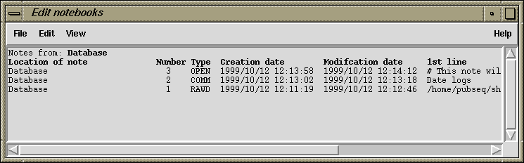

The primary interface to creating, viewing and editing notes is the Note Selector window. This is accessable from a variety of places, including anywhere a contig or reading name (or line in a graphical plot) is displayed, and also by using the "Edit Notebooks" command in the main gap4 Edit menu.

The Note Selector initially starts up showing the database notes (unless
selected from a specific contig or reading plot). The picture above shows three
notes attached to the main gap4 database record. These are of type OPEN
and RAWD, both of which have a specific meaning to gap4, and type
COMM.
The View Menu is used to see a list of notes for readings or contigs. If Reading Notes or Contig Notes is selected, the interface will ask for a reading or contig identifier by adding an extra line to the Note Selector Window, just beneath the menus. Typing one in and pressing return will then list the notes for that reading or contig.
To speed up selection, it is possible to use the right mouse button on the Contig Selector Window and in the contig rulers at the bottom of many plots (such as the Template Display), to select the "List Notes" option. This will start the Note Selector if it is not already running, and will direct it to display notes for the desired contig. Similarly, the right mouse button can be used to popup a menu from a reading in the Template Display or from a reading name in the Contig Editor.
To edit a note, double click anywhere in the Note Selector on the line for the note.
To delete a note, single click on the note line to highlight it and then select "Delete" from the Note Selector Edit menu. To delete several notes at once, first highlight a range by left clicking and dragging the mouse to mark a region of notes, and then use Delete. Alternatively notes may be deleted by double clicking to bring up the note editor and selecting Delete from the Note Editor File menu.
To create a new note use the "New" command from the Edit menu. The note will
be added to whatever data type is currently shown. To create a
note for a particular contig, select that contig using the Contig Notes option
in the View menu, and then use New to create a new note. New notes
will have type COMM and the contents can be in any format.